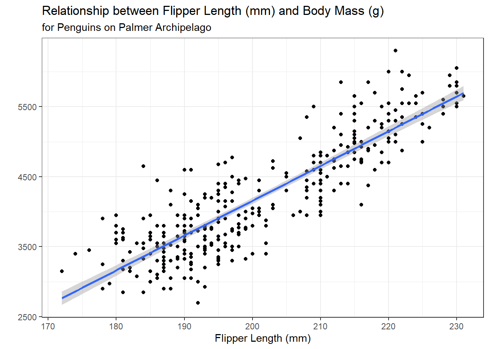
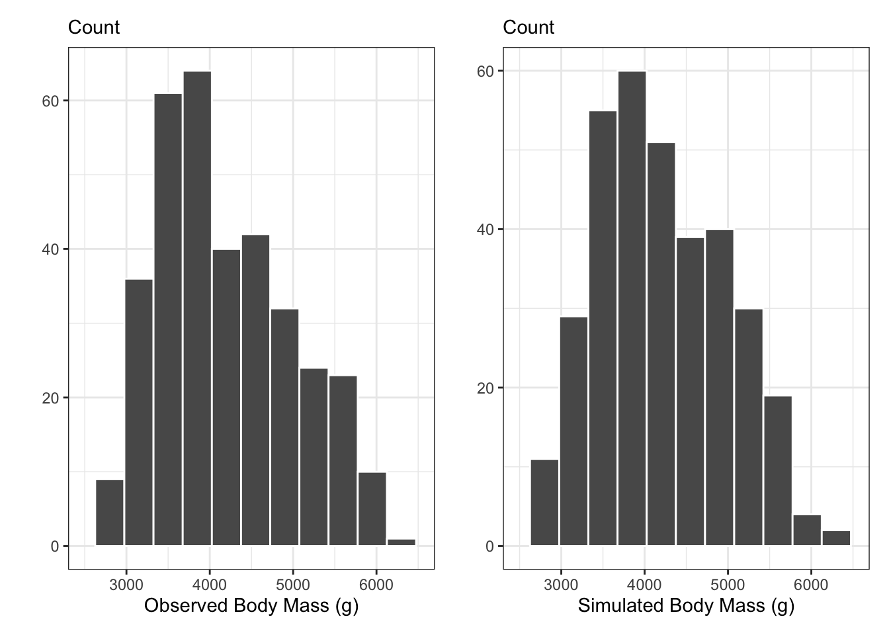
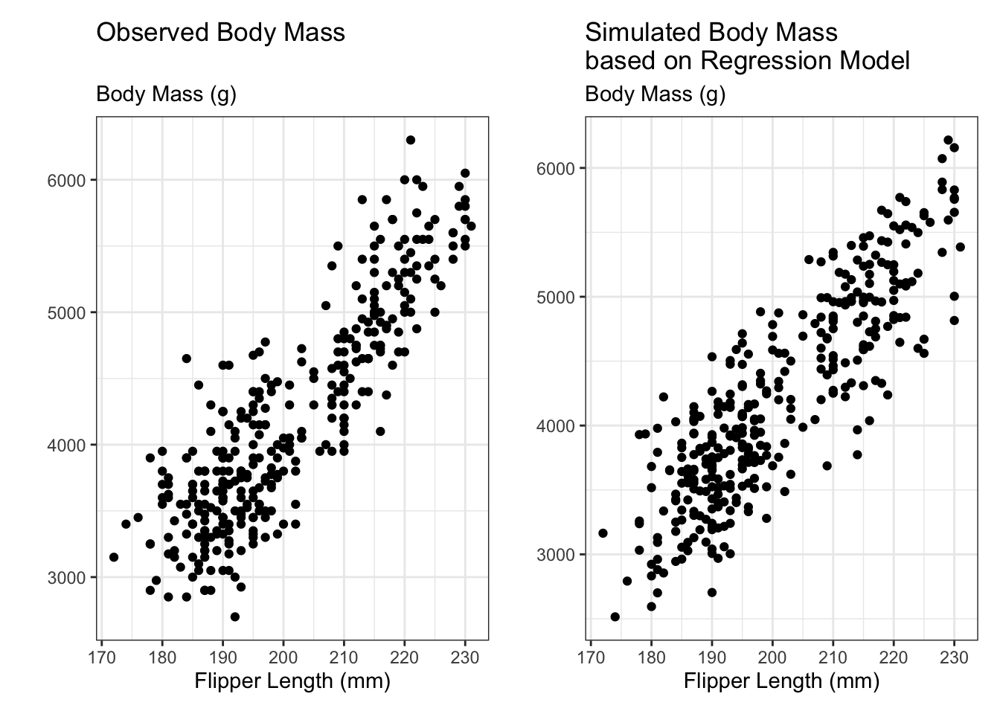
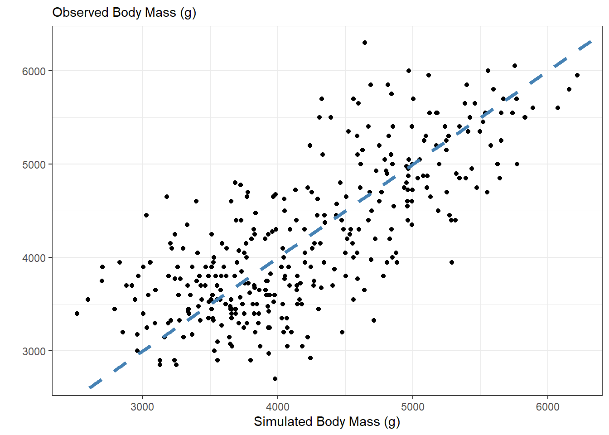
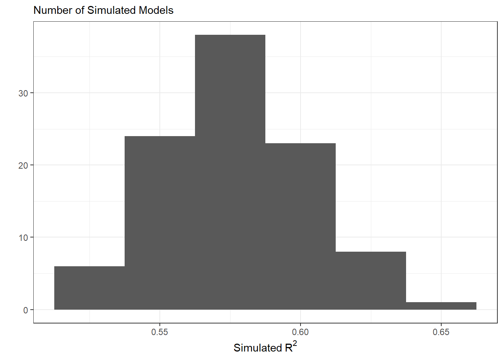

library(palmerpenguins)
data(penguins)10 Predictive Checks
Reading: 11 minute(s) at 200 WPM
Videos: NA
Objectives
This chapter is heavily from Dr. Theobold’s course-page material.
- Make predictions from a linear model
- Include variability into predictions
- Understand what is assumed about the data generating process in a linear regression
- Assess if the assumed linear model accurately describes the observed data
Check-ins
There is one check-in for this week:
- Check-in 10.1: Linear Regression
There are 7 questions scattered throughout the reading this week.
It is difficult to include in a [statistical model] all of one’s knowledge about a problem, and so it is wise to investigate what aspects of reality are not captured by the model.
- Andrew Gelman, Bayesian Data Analysis
10.1 Model Checking
In explanatory modeling, it is incredibly important to check if you can make sound inferences from the model that was fit. Whether the model is a “simple” difference in means or a more “complex” multiple linear regression, the estimated coefficients obtained from the model should not be used for inference if the conditions of the model are violated. Typically, model checking for a linear regression is taught through a “residual analysis,” inspecting different visualizations of the residuals from the model. This week, however, we will learn a different way to assess our regression model.
10.1.1 Predictive Checks, Bayesian Modeling, and Subjectivity
The idea of predictive checks for a statistical model are most often seen in the context of Bayesian modeling. In Bayesian modeling, rather than obtaining a single estimate for a parameter, you obtain a distribution of plausible values for that parameter. The distribution suggests which values of that parameter are more or less likely, given what was seen in the data and the prior knowledge incorporated into the model.
The prior knowledge about what values we expect for the parameter comes in the form of a prior distribution. Different statisticians may choose a different prior distributions, much like different statisticians might choose different variables to include in their regression. Although there are large similarities between the choice of a prior distribution and the choice of a statistical model, prior distributions receive a great deal of flack for how the interlace “subjectivity” into the statistical modeling process.
Due in part to these criticisms regarding the choice of a prior distribution, it is common in Bayesian analyses to perform predictive checks to assess the fit of the model to the data at hand. While we are not fitting Bayesian models, I believe there is a great deal we can learn from the concept of using predictive checks for any statistical model. Any good analysis should include a check of the “adequacy of the fit of the model to the data and the plausibility of the model for the purposes for which the model will be used” (Gelman 2014).
10.1.2 Predictive Checks in a Linear Regression
Under a simple linear regression model, we assume that the responses can be modeled as a function of the explanatory variable and some error:
\[y = \beta_0 + \beta_1 \cdot x_1 + \epsilon\]
In a linear model we assume that the errors (\(\epsilon\)) follow a Normal distribution with mean 0 and standard deviation (\(\sigma\)) – \(\epsilon \sim N(0,\sigma)\).
This implies that we can simulate data that we would expect to come from this model, by adding normally distributed errors to the values predicted from the linear regression. Moreover, when we randomly generate these errors, we better understand what the “normality,” “equal variance,” and “independence” conditions mean in the context of the linear regression model.
10.1.3 Connection to Model Conditions
A linear regression model has four conditions, which follow the LINE acronym:
Linear relationship between \(x\) and \(y\) Independence of observations Normality of residuals Equal variance of residuals
The first condition relates to the relationship between the explanatory (\(x\)) and response (\(y\)) variable. As you might expect, using a line to model a non-linear relationship is a bad choice! Thus, we will only make predictions from a linear regression where there appears to be a linear relationship between the variables.
The process of adding normally distributed errors to the predictions from the linear regression assumes three things:
- the errors follow a specific distribution, namely \(N(0,\sigma)\)
- the errors all have the same variance (\(\sigma\))
- the errors are not related to each other
The Normality and equal variance conditions are manifested in using the \(N(0,\sigma)\) distribution to generate the errors. The independence condition is manifested in the assumption that we can draw random errors for each observation (prediction), because the errors are not related to each other.
This might feel like a bit of a stretch, especially if you haven’t seen linear regression in a bit, so let me break this down a bit more. When we assume that observations are independent, we are saying that we shouldn’t be able to know the \(y\) value for one observation just from knowing the \(y\) value of another observation. If I have repeated observations, like values for the same country across multiple years, then it’s pretty likely that I can guess the value of a variable in 1991 from knowing the same variable’s value in 1990. Since we are using linear regression to model the relationship between the explanatory variable(s) and the response, this assumption can be rephrased in terms of each observation’s residual. Specifically, knowing the residual for one observation shouldn’t give us perfect information about the residual for another observation. Because we are assuming that the observations / residuals are independent, we can randomly draw an error for each observation.
10.2 Performing a Predicitive Check for a Linear Regression
I will be walking through how to carry out the process of performing a predictive check for a simple linear regression model in the context of the penguins data set from the palmerpenguins package.
We will start by fitting a simple linear regression model, modeling a penguin’s body_mass_g as a function of their flipper_length_mm.
penguins |>
ggplot(mapping = aes(x = flipper_length_mm, y = body_mass_g)) +
geom_point() +
geom_smooth(method = "lm") +
labs(x = "Flipper Length (mm)",
y = "",
title = "Relationship between Flipper Length (mm) and Body Mass (g)",
subtitle = "for Penguins on Palmer Archipelago") +
theme_bw()
penguin_lm <- lm(body_mass_g ~ flipper_length_mm, data = penguins)
10.2.1 Obtaining Predictions predict()
The next step is to obtain the predictions (.fitted values) from the regression model. There is a handy built-in function for extracting the predicted values from a lm object – the predict() function.
Recall we also have the augment() function that will provide us with the .fitted values – this is analogous to the predictions from predict().
1 2 3 5 6 7
3212.256 3460.684 3907.854 3808.483 3659.426 3212.256 Q1: The predict() function
What is the data structure of the predictions that are output by the predict() function?
- list
- vector
- matrix
- dataframe
10.2.2 Extracting the Estimate of \(\sigma\) sigma()
The residual standard error shown in the summary() output of a linear regression is the “best” estimate for the value of \(\sigma\). We can extract this value using the built-in sigma() function and save it in an object for later use.
summary(penguin_lm)
Call:
lm(formula = body_mass_g ~ flipper_length_mm, data = penguins)
Residuals:
Min 1Q Median 3Q Max
-1058.80 -259.27 -26.88 247.33 1288.69
Coefficients:
Estimate Std. Error t value Pr(>|t|)
(Intercept) -5780.831 305.815 -18.90 <2e-16 ***
flipper_length_mm 49.686 1.518 32.72 <2e-16 ***
---
Signif. codes: 0 '***' 0.001 '**' 0.01 '*' 0.05 '.' 0.1 ' ' 1
Residual standard error: 394.3 on 340 degrees of freedom
(2 observations deleted due to missingness)
Multiple R-squared: 0.759, Adjusted R-squared: 0.7583
F-statistic: 1071 on 1 and 340 DF, p-value: < 2.2e-16penguin_sigma <- sigma(penguin_lm)
penguin_sigma[1] 394.2782
10.2.3 Adding Errors / Noise to Predictions rnorm()
As stated before, under a linear regression model, we can simulate data that we would have expected to come from this model, by adding normally distributed errors to the values predicted from the linear regression.
Thus, it is useful for us to write a function that adds Normally distributed errors to a vector, x, given the value of sd input. I’ve written one such function here:
Next, we can use this function to generate a new “fake” dataset with observations we would have expected to come from our linear regression. Note I’m storing these predictions in a tibble(), so that I can easily plot them later!
sim_response <- tibble(sim_body_mass_g = noise(penguin_predict,
sd = penguin_sigma)
)
head(sim_response)# A tibble: 6 × 1
sim_body_mass_g
<dbl>
1 2701.
2 3422.
3 4070.
4 3339.
5 3911.
6 3792.Q2: Normal Errors
What does a mean of 0 imply for the residuals?
10.3 Plotting Predictions
The best way to assess if / where there are differences between the simulated data and the observed data is through visualizations. We can do this in two ways, (1) visualizing the distribution of the responses, and (2) visualizing the relationship between the responses and the explanatory variables.
10.3.1 Distribution of Responses
obs_p <- penguins |>
ggplot(aes(x = body_mass_g)) +
geom_histogram(binwidth = 350) +
labs(x = "Observed Body Mass (g)",
y = "",
subtitle = "Count") +
xlim(2500, 6500) +
theme_bw()
new_p <- sim_response |>
ggplot(aes(x = sim_body_mass_g)) +
geom_histogram(binwidth = 350) +
labs(x = "Simulated Body Mass (g)",
y = "",
subtitle = "Count") +
xlim(2500, 6500) +
theme_bw()
library(patchwork)
obs_p + new_p
Q3: Simulated Data Distribution
Are the simulated bill lengths similar or different from the observed bill lengths? Where do you see differences? Where do you see similarities? Would you conclude that both distributions could have come from the same data generating process?
10.3.2 Adding in the Observed x’s
If we are interested in seeing if the observed relationships between flipper_length_mm and body_mass_g are radically different from the simulated data, we need to add these variables into our simulated data set.
Remember, by default lm() throws out any observations with missing values (NA) for any of the variables included in the regression. Thus, we will have fewer predictions than observations in our data set. To make sure the predictions match up with their corresponding row, we need to filter the missing values out of the data set before we bind the columns together.
sim_data <- penguins |>
filter(!is.na(body_mass_g),
!is.na(flipper_length_mm)
) |>
select(body_mass_g, flipper_length_mm) |>
bind_cols(sim_response)
head(sim_data)# A tibble: 6 × 3
body_mass_g flipper_length_mm sim_body_mass_g
<int> <int> <dbl>
1 3750 181 2701.
2 3800 186 3422.
3 3250 195 4070.
4 3450 193 3339.
5 3650 190 3911.
6 3625 181 3792.10.3.3 Scatterplot of Relationships
A scatterplot of the relationships modeled by the linear regression can give a more detailed idea for where the simulated data differ from the observed data. In the scatterplots below, we see that the data simulated from the regression more closely follows a linear relationship, but there are not dramatic differences between the two scatterplots.
obs_reg_p <- penguins |>
ggplot(aes(y = body_mass_g,
x = flipper_length_mm)) +
geom_point() +
labs(title = "Observed Body Mass",
x = "Flipper Length (mm)",
y = "",
subtitle = "Body Mass (g)") +
theme_bw()
sim_reg_p <-sim_data |>
ggplot(aes(y = sim_body_mass_g,
x = flipper_length_mm)
) +
geom_point() +
labs(title = "Simulated Body Mass \nbased on Regression Model",
x = "Flipper Length (mm)",
y = "",
subtitle = "Body Mass (g)") +
theme_bw()
obs_reg_p + sim_reg_p
10.4 Assessing Predictions
We would expect that if the regression model is a good model for penguin body mass, then the simulated data should look similar to what was observed. We can compare the simulated data with the observed data using a scatterplot.
If the simulated data were identical to the observed data, they would all fall on the \(y = x\) line (dashed blue). Values above the \(y = x\) line correspond to simulated body masses larger than the observed body masses, and values below the line correspond to simulated body masses smaller than the observed body masses. Overall, it appears that there are about as many over estimates as underestimates. It appears there is a “moderate” relationship between the observed values and simulated values, as the points are fairly close to the line, but not extremely close.
sim_data |>
ggplot(aes(x = sim_body_mass_g,
y = body_mass_g)
) +
geom_point() +
labs(x = "Simulated Body Mass (g)",
y = "",
subtitle = "Observed Body Mass (g)" ) +
geom_abline(slope = 1,
intercept = 0,
color = "steelblue",
linetype = "dashed",
lwd = 1.5) +
theme_bw()
We can use a statistic to summarize how “close” the simulated values and the observed values are. We can use any statistic that captures the residuals from this regression. I like \(R^2,\) since it has an easy reference value for what I would expect if my model did a good job (\(R^2 \approx 1\)).
I like the glance() function from the broom package, since it produces a nice table output of the summary measures from a linear regression.
lm(body_mass_g ~ sim_body_mass_g,
data = sim_data
) |>
glance() | r.squared | adj.r.squared | sigma | statistic | p.value | df | logLik | AIC | BIC | deviance | df.residual | nobs |
|---|---|---|---|---|---|---|---|---|---|---|---|
| 0.553 | 0.552 | 536.778 | 421.14 | 0 | 1 | -2633.944 | 5273.888 | 5285.392 | 97964349 | 340 | 342 |
I can then use the column names of the table to select() the r.squared column
This would be a great place to use inline code to report the $R^2 value!
sim_r2 <- lm(body_mass_g ~ sim_body_mass_g,
data = sim_data
) |>
glance() |>
select(r.squared) |>
pull()
sim_r2[1] 0.5533018Q4: Interpreting \(R^2\)
What does the \(R^2\) value of 0.553 for the above regression mean? How would you interpret it?
10.5 Iterating!
We are interested in seeing how our model performs for more than one simulated data set. Thus, we need to iterate through the process outlined above. Specifically, at each step we will need to:
- Simulate new data
- Regress the new data on the observed data
- Save the \(R^2\) from the regression
10.5.1 Lots of Simulated Observations
Luckily, we have already written the noise() function that helps us simulate new observations that could have occurred under our model. Since we are not changing any input to noise(), we can choose between passing an “arbitrary” input to map() (e.g., 1:100). This essentially rerun the same process multiple times. Since we want for every simulated data set to be bound together as columns, we can use the map_dfc() function!
nsims <- 100
sims <- map_dfc(.x = 1:nsims,
.f = ~ tibble(sim = noise(penguin_predict,
sd = penguin_sigma)
)
)
head(sims)# A tibble: 6 × 100
sim...1 sim...2 sim...3 sim...4 sim...5 sim...6 sim...7 sim...8 sim...9
<dbl> <dbl> <dbl> <dbl> <dbl> <dbl> <dbl> <dbl> <dbl>
1 3330. 2653. 3087. 3150. 3129. 3859. 3454. 3088. 3262.
2 3446. 3754. 3335. 2994. 2989. 3979. 3456. 3929. 3401.
3 3904. 4197. 3450. 3582. 4103. 4317. 3666. 4069. 3626.
4 4445. 3608. 3342. 3672. 4412. 3510. 3543. 4393. 4261.
5 3356. 3924. 3464. 3581. 3304. 4460. 3600. 3877. 3568.
6 3100. 3072. 3534. 3054. 3006. 3769. 2769. 2546. 3224.
# ℹ 91 more variables: sim...10 <dbl>, sim...11 <dbl>, sim...12 <dbl>,
# sim...13 <dbl>, sim...14 <dbl>, sim...15 <dbl>, sim...16 <dbl>,
# sim...17 <dbl>, sim...18 <dbl>, sim...19 <dbl>, sim...20 <dbl>,
# sim...21 <dbl>, sim...22 <dbl>, sim...23 <dbl>, sim...24 <dbl>,
# sim...25 <dbl>, sim...26 <dbl>, sim...27 <dbl>, sim...28 <dbl>,
# sim...29 <dbl>, sim...30 <dbl>, sim...31 <dbl>, sim...32 <dbl>,
# sim...33 <dbl>, sim...34 <dbl>, sim...35 <dbl>, sim...36 <dbl>, …Since all of the columns have the same name, dplyr automatically adds ... and a number after each column. So, our column names look like sim...1, sim...2, etc. It would be nice to replace the ...s with a _, which our friend str_replace_all() can help us do! Remember, the . is a special character and needs to be escaped!
Finally, we can add the observed response (body_mass_g) into our simulated data set, for ease of modeling and visualizing.
sims <- penguins |>
filter(!is.na(body_mass_g),
!is.na(flipper_length_mm)) |>
select(body_mass_g) |>
bind_cols(sims)
head(sims)# A tibble: 6 × 101
body_mass_g sim_1 sim_2 sim_3 sim_4 sim_5 sim_6 sim_7 sim_8 sim_9 sim_10
<int> <dbl> <dbl> <dbl> <dbl> <dbl> <dbl> <dbl> <dbl> <dbl> <dbl>
1 3750 3330. 2653. 3087. 3150. 3129. 3859. 3454. 3088. 3262. 3379.
2 3800 3446. 3754. 3335. 2994. 2989. 3979. 3456. 3929. 3401. 3845.
3 3250 3904. 4197. 3450. 3582. 4103. 4317. 3666. 4069. 3626. 3981.
4 3450 4445. 3608. 3342. 3672. 4412. 3510. 3543. 4393. 4261. 4222.
5 3650 3356. 3924. 3464. 3581. 3304. 4460. 3600. 3877. 3568. 4258.
6 3625 3100. 3072. 3534. 3054. 3006. 3769. 2769. 2546. 3224. 2885.
# ℹ 90 more variables: sim_11 <dbl>, sim_12 <dbl>, sim_13 <dbl>, sim_14 <dbl>,
# sim_15 <dbl>, sim_16 <dbl>, sim_17 <dbl>, sim_18 <dbl>, sim_19 <dbl>,
# sim_20 <dbl>, sim_21 <dbl>, sim_22 <dbl>, sim_23 <dbl>, sim_24 <dbl>,
# sim_25 <dbl>, sim_26 <dbl>, sim_27 <dbl>, sim_28 <dbl>, sim_29 <dbl>,
# sim_30 <dbl>, sim_31 <dbl>, sim_32 <dbl>, sim_33 <dbl>, sim_34 <dbl>,
# sim_35 <dbl>, sim_36 <dbl>, sim_37 <dbl>, sim_38 <dbl>, sim_39 <dbl>,
# sim_40 <dbl>, sim_41 <dbl>, sim_42 <dbl>, sim_43 <dbl>, sim_44 <dbl>, …10.5.2 Lots of Regressions & \(R^2\) Values
Now, we want to regress each of these simulated body_mass_gs on the original, observed body_mass_g. Again, we will need to iterate through this process.
Before, I fit a linear regression between body_mass_g and the simulated data. Now, I have 100 different datasets I need to regress on body_mass_g. I can use map() to define a function that will be applied to each column of sims. This function regresses body_mass_g on each column (.x) from the sims dataset.
sims |>
map(~ lm(body_mass_g ~ .x, data = sims))Q5: Mapping Linear Regression
What is the data structure of the values output after the map(~lm(body_mass_g ~ .x, data = sims)) step?
- list
- vector
- matrix
- dataframe
Next, I map() the glance() function onto each of these 100 regressions.
sims |>
map(~ lm(body_mass_g ~ .x, data = sims)) |>
map(glance)Q6: Mapping Linear Regression Summaries
What is the data structure of the values output after the map(glance) step?
- list
- vector
- matrix
- dataframe
Finally, I use map_dbl() to extract the r.squared from each of the model fit summaries.
sims |>
map(~ lm(body_mass_g ~ .x, data = sims)) |>
map(glance) |>
map_dbl(~ .x$r.squared)Q7: Mapping Regression Summaries
What is the data structure of the values output after the map_dbl(~.$r.squared) step?
- list
- vector
- matrix
- dataframe
10.5.3 Inspecting the \(R^2\) Values
sim_r_sq <- sims |>
map(~ lm(body_mass_g ~ .x, data = sims)) |>
map(glance) |>
map_dbl(~ .x$r.squared)If I look at the first six \(R^2\) values, I see that the first value corresponds to the the following regression: lm(body_mass_g ~ body_mass_g)
All of the values thereafter are the \(R^2\) values from the simulated data.
head(sim_r_sq)body_mass_g sim_1 sim_2 sim_3 sim_4 sim_5
1.0000000 0.5896863 0.5753450 0.5819932 0.5725102 0.5705712 I am interested in looking at the distribution of \(R^2\) values from the simulated data, so I’m going to remove this unwanted entry of the sim_r_sq vector.
sim_r_sq <- sim_r_sq[names(sim_r_sq) != "body_mass_g"]10.5.4 Plotting the Simulated \(R^2\) Values versus the Observed \(R^2\)
The final stage is to plot the statistics from the simulated data. The distribution of these \(R^2\) values will tell if our assumed model does a good job of producing data similar to what was observed. If the model produces data similar to what was observed, we would expect \(R^2\) values near 1.
tibble(sims = sim_r_sq) |>
ggplot(aes(x = sims)) +
geom_histogram(binwidth = 0.025) +
labs(x = expression("Simulated"~ R^2),
y = "",
subtitle = "Number of Simulated Models") +
theme_bw()
In this plot, we see that the simulated datasets have \(R^2\) vales between 0.5 and 0.65. This indicates the data simulated under this statistical model are moderately similar to what was observed. On average, our simulated data account for about 57.7% of the variability in the observed penguin body mass.
References
Gelman, Andrew. 2014. “Model Checking.” In Bayesian Data Analysis. CRC Press.